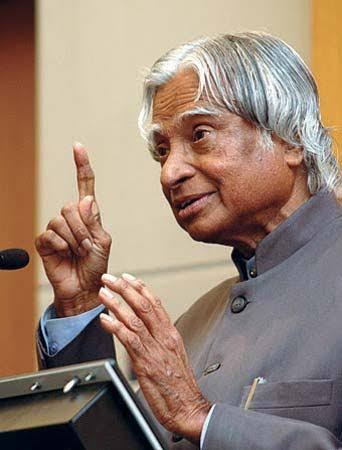

The Missile Man of India & People's President

Dr. A. P. J. Abdul Kalam was one of India's most respected scientists, educators, and leaders. Born on October 15, 1931, in Rameswaram, Tamil Nadu, he came from a humble family and achieved success through hard work and determination.
He played an important role in India's space and missile development programs while working with ISRO and DRDO. His contributions to projects like Agni and Prithvi missiles earned him the title "Missile Man of India."
In 2002, he became the 11th President of India. During his presidency, he inspired millions of students by encouraging them to dream big, work hard, and contribute to the nation's development.
Even after leaving office, Dr. Kalam continued teaching and motivating young people until his last day. His life remains an example of simplicity, knowledge, and dedication to the country.
"Dream, dream, dream. Dreams transform into thoughts and thoughts result in action."